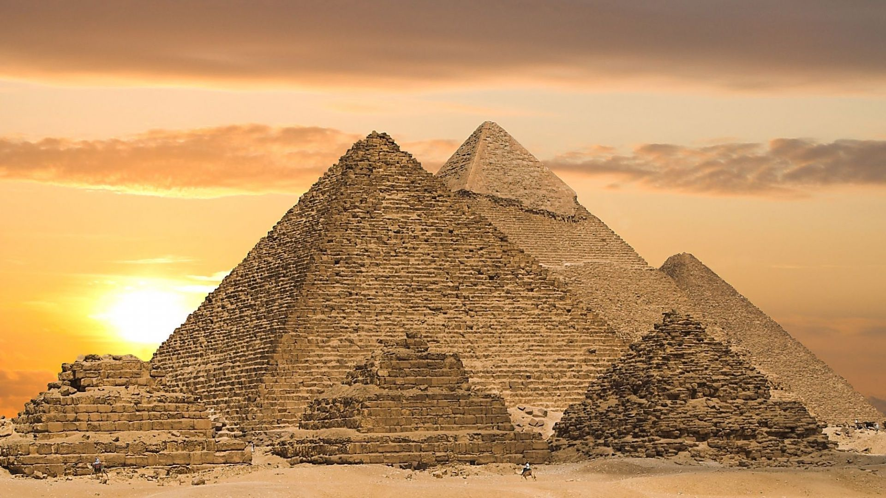
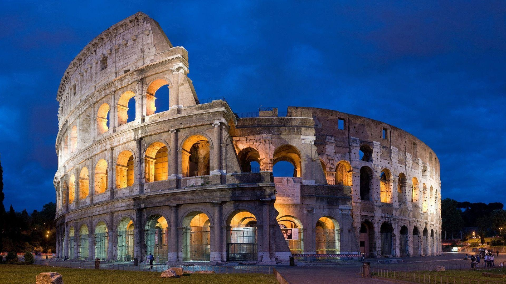
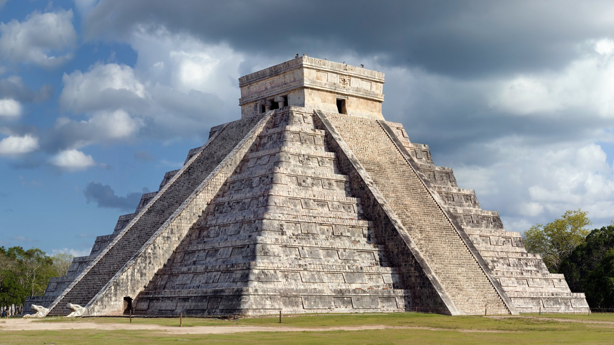
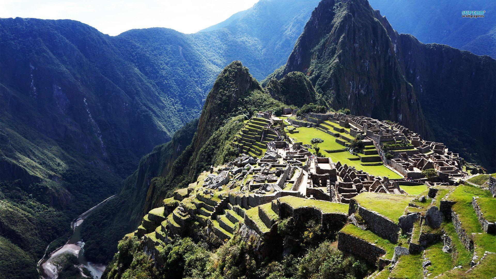
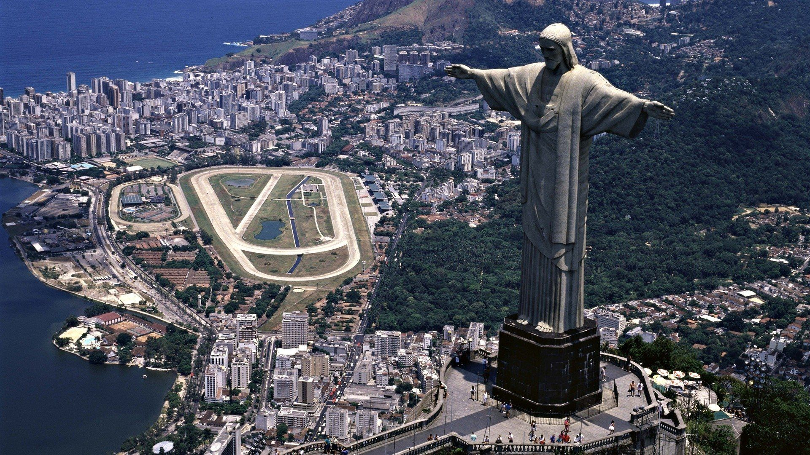

The Great Wall of China is a series of fortifications that were built across the historical northern borders of ancient Chinese states and Imperial China as protection against various nomadic groups from the Eurasian Steppe. An interesting fact about it is that it took over 200 years to build.
Taj Mahal, India
The Taj Mahal is an ivory-white marble mausoleum commissioned in 1632 by the Mughal emperor Shah Jahan to house the tomb of his favorite wife, Mumtaz Mahal; it also houses the tomb of Shah Jahan himself. An interesting fact about the Taj Mahal is that the palace was designed so that everything would fall away from the tomb in the event of a collapse.
Great Pyramid of Giza, Egypt
The Great Pyramid of Giza is the oldest out of all of the seven wonders of the world and one of the biggest pyramids in its area in Egypt. It is believed that the 454 ft pyramid was built as a burial ground for the late King Khufu and other notable Pharaohs that were alive during a period known as “the old kingdom”. Fun fact for around 3000 years it was the tallest structure in the world.
Colosseum, Italy
This Gladiatorial Arena was built in Rome, Italy beginning around 71 CE and ending in 82 CE. This structure could fit 50,000 spectators. A fun fact about the Colosseum is that it was originally called the Flavian Amphitheatre.
Chichen Itza, Mexico
Chichen Itza is an ancient Mayan city built in Yucatán state, Mexico. It was constructed in the 6th century. An interesting fact about Chichen Itza is that the famous Pyramid that many people associate with this location actually contains smaller Pyramids within it.
Machu Picchu, Peru
Machu Picchu is an Incan citadel set high in the Andes Mountains in Peru, above the Urubamba River valley. A fun fact about Machu Picchu is that no wheels were used to transport heavy rocks for the construction of the city.
Christ Redeemer, Brazil
Christ the redeemer is a statue of Jesus Christ that was built and sculpted in Rio de Janeiro. The design was originally made by a french man named Paul Landowski and was officially constructed by an engineer named Heitor da Silva Costa in between 1922-1931. Fun fact this statue is the largest art deco statue on earth with a max height of around 30 meters.
More Pictures





×
Puzzle Game
About Us
Aidan Skeete
Aiden is a rising senior at Northern Highlands Regional High School. He currently lives in Saddle River, NJ. A fun fact is that I’ve played basketball for a couple years.
Alivia Ding
Alivia is a rising junior at Woodbridge High School. She currently lives in Irvine, California. She likes skiing and playing mobile games. A fun fact about her is that she has been playing the piano for 11 years.
Dev Joshi
Dev is a rising senior at Parsippany Hills High School. He currently lives in Parsippany, New Jersey. A fun fact about him is that he is the captain of his school basketball team.
Jeremiah Justice
Jeremiah is a rising freshman at Germantownacademy in Fort Washington Pa who currently lives in north philadelphia. Fun Fact Jeremiah plays baseball and football.
Shayla Astudillo
Shayla is a rising senior at Landmark High School. They live in Ozone Park, New York. A fun fact about them is they co-founded their school’s tutoring club.
Sophia Yang
Sophia is a rising junior at Round Rock High School. She was born and raised in Taiwan, and now lives in Texas. A fun fact about her is that she has been playing the violin for ten years.
Zachary Braffman
Zachary is a rising senior at Brooklyn Technical Highschool. He currently lives in Manhattan. A Fun Fact about him is that he is currently designing his own TTRPG as well as his own Video Game.